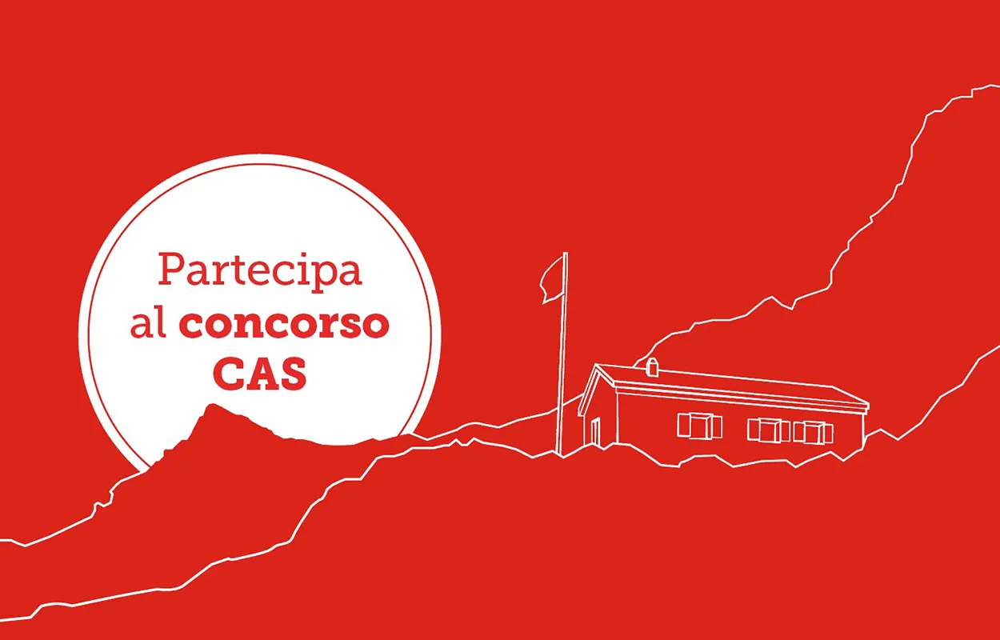
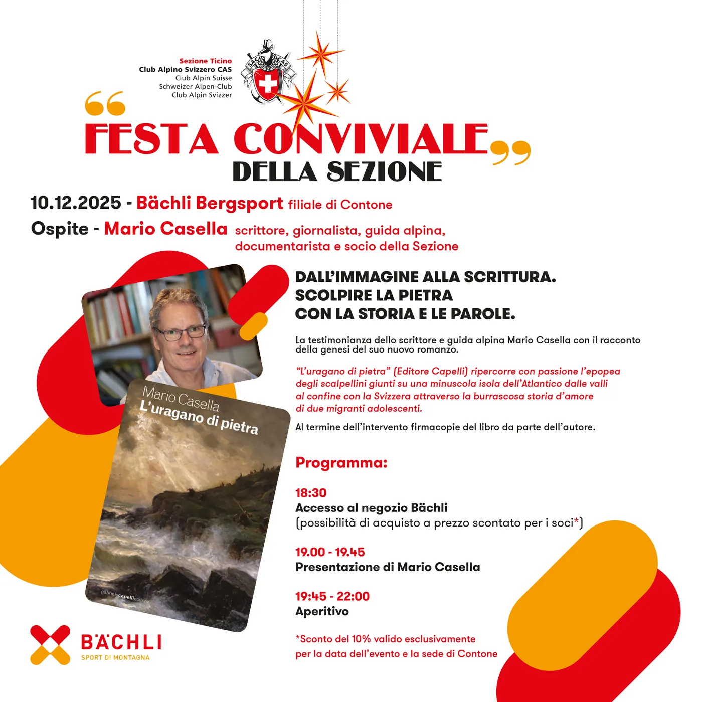

Informazioni sull’affiliazione

Andare insieme in montagna condividendo la gioia per il mondo alpino – il CAS unisce le persone appassionate della montagna, giovani e meno giovani. Siamo felici che anche tu appartenga alla più grande famiglia degli sport della montagna della Svizzera. Ti ringraziamo per l’affiliazione e la fiducia. Entro il 5 gennaio 2026 riceverai la tua fattura di affiliazione al CAS direttamente nella tua casella di posta elettronica; se hai attivato eBill, la riceverai automaticamente lì.
In qualità di socia o socio benefici di numerosi vantaggi presso il CAS e presso i nostri partner. Scopri le accattivanti offerte e gli ulteriori vantaggi di cui puoi beneficiare in qualità di socia o socio.
In occasione del grande concorso CAS ti attendono inoltre altri interessanti premi. Partecipa e, con un po’ di fortuna, vinci uno degli splendidi premi per un valore complessivo di oltre CHF 7500.–.
VANTAGGI IN QUALITÀ DI SOCIO/A CASIn qualità di socia o socio del CAS puoi gestire i tuoi dati nel tuo account CAS in modo semplice e comodo. Lì puoi modificare facilmente dati quali indirizzo, indirizzo e-mail o numero di telefono nonché i tuoi abbonamenti e la tua affiliazione.
Ti preghiamo di notare che non riceverai una nuova tessera soci per posta. La tua tessera di affiliazione digitale è attiva nel tuo account CAS da cui puoi scaricarla e stamparla in qualsiasi momento. La tessera digitale è disponibile anche nell’app SAC-CAS – per averla sempre a portata di mano e utilizzarla anche offline.
Abbiamo raccolto i quesiti frequenti e li abbiamo raggruppati nella voce Domande frequenti sull’affiliazione.
Weitere Meldungen
Alle News
Islanda da esplorare
Vuoi partecipare a un’esplorazione scialpinistica nel Nord Islanda? L’uscita CAS è prevista da venerdì 13 a venerdì 20 marzo 2026. Non perdere questa magnifica occasione! Iscriviti alla gita Programma Venerdì 13 marzo…

Campo Vallemaggia diventa Villaggio degli alpinisti
La genuina comunità ticinese convince con un turismo vicino alla natura. Silenzioso, appartato e impressionante: chi visita Campo Vallemaggia incontra l’autenticità nel mezzo di un selvaggio mondo alpino. Il Comune…

Festa conviviale della Sezione
Mercoledì 10.12.2025 – Festa conviviale della Sezione Vi aspettiamo numerosi, mercoledì 10.12.2025, dalle 18:30 da Bächli Sport a Contone. Ospite – Mario Casella, scrittore, giornalista, guida alpina, documentarista e…